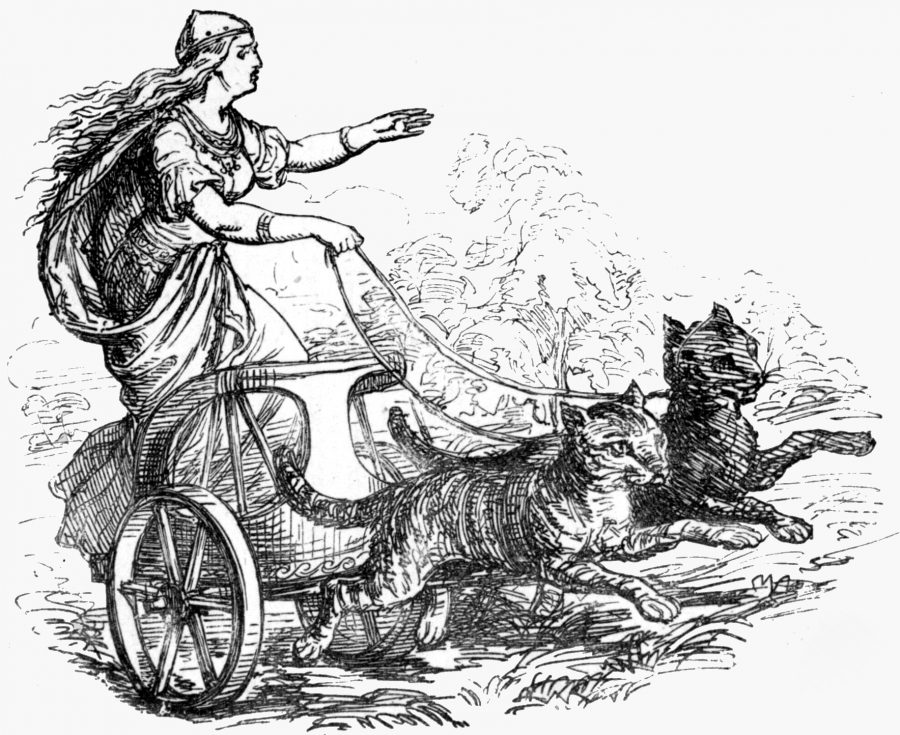

- The Viking CSS Garden is a place for you to take raw potential and turn it into something beautiful with the power of CSS.
- Take the seeds that are this HTML file and plant them.
- Water and feed them with nurishing styles, colors and images.
- Watch them evolve into a stunning display.
Growing Your Garden
Norse mythology
Norse mythology is the body of mythology of the North Germanic people stemming from Norse paganism and continuing after the Christianization of Scandinavia and into the Scandinavian folklore of the modern period. The northernmost extension of Germanic mythology, Norse mythology consists of tales of various deities, beings, and heroes derived from numerous sources from both before and after the pagan period, including medieval manuscripts, archaeological representations, and folk tradition.
Numerous gods are mentioned in the source texts such as the hammer-wielding, humanity-protecting god Thor, who relentlessly fights his foes; the one-eyed, raven-flanked god Odin, who craftily pursues knowledge throughout the worlds and bestowed among humanity the runic alphabet; the beautiful, seiðr-working, feathered cloak-clad goddess Freyja who rides to battle to choose among the slain; the vengeful, skiing goddess Skaði, who prefers the wolf howls of the winter mountains to the seashore; the powerful god Njörðr, who may calm both sea and fire and grant wealth and land; the god Freyr, whose weather and farming associations bring peace and pleasure to humanity; the goddess Iðunn, who keeps apples that grant eternal youthfulness; the mysterious god Heimdallr, who is born of nine mothers, can hear grass grow, has gold teeth, and possesses a resounding horn; the jötunn Loki, who brings tragedy to the gods by engineering the death of the goddess Frigg's beautiful son Baldr; and numerous other deities.

Most of the surviving mythology centers on the plights of the gods and their interaction with various other beings, such as humanity and the jötnar, beings who may be friends, lovers, foes and/or family members of the gods. The cosmos in Norse mythology consists of Nine Worlds that flank a central cosmological tree, Yggdrasil. Units of time and elements of the cosmology are personified as deities or beings. Various forms of a creation myth are recounted, where the world is created from the flesh of the primordial being Ymir, and the first two humans are Ask and Embla. These worlds are foretold to be reborn after the events of Ragnarök, when an immense battle occurs between the gods and their enemies, and the world is enveloped in flames, only to be reborn anew. There the surviving gods will meet, and the land will be fertile and green, and two humans will repopulate the world.
Norse mythology has been the subject of scholarly discourse since the 17th century, when key texts were brought to the attention of the intellectual circles of Europe. By way of comparative mythology and historical linguistics, scholars have identified elements of Germanic mythology reaching as far back as Proto-Indo-European mythology. In the modern period, the Romanticist Viking revival re-awoke an interest in the subject matter, and references to Norse mythology may now be found throughout modern popular culture. The myths have further been revived in a religious context among adherents of Germanic Neopaganism.